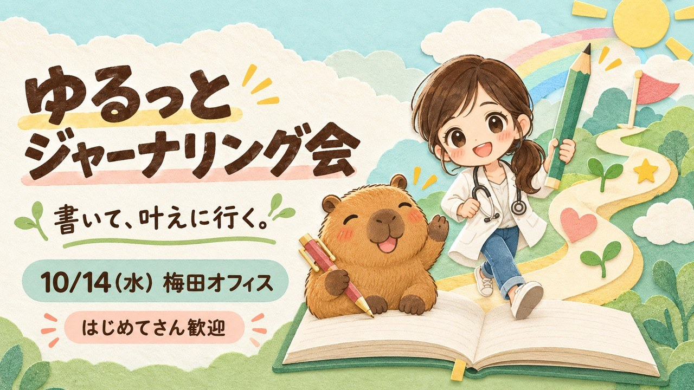

1やることは、3つだけです
むずかしい入力は、AIにまかせて大丈夫です。
- ちょるさん
日にちと場所を決めます
リベシティオフィスで開くなら、先にオフィスの予約を取っておきます。予約は主催するちょるさんの名前で。
- AI
下の合言葉をAIに渡します
AIがこのページを読んで、足りないことを質問しながら、作成画面をひとつずつ埋めていきます。
- ちょるさん
画面を見て「作成する」を押します
タイトル・日時・場所を自分の目で見て、よければボタンをぽちっと。ここがちょるさんの初主催の瞬間です。
このページを最後まで読んで、「AIさんへ」に書いてある順番で、わたしのリベシティのオフ会チャットを「作成する」ボタンの手前まで一緒に作ってください。 https://okemonogatari-hash.github.io/html-share-box/friend-share-g-daW1jVduZyFSXXdm/ まず、決まっていないことをわたしに質問してください。「作成する」はわたしが自分で押します。
ブラウザを操作できるAI（Claude の Chrome 拡張など）なら、そのまま画面に入れてくれます。操作ができないAIでも、タイトルと概要文を一緒に作って、入れる順番を案内してくれます。
2先に、この5つだけ決めておきます
決まっていなくても大丈夫です。AIが聞いてくれます。黄色いところは、おけもんがデモで入れた値です。
- 📅 いつ日にちと、はじまり・おわりの時間。10/14(水) 15:30〜17:00
- 📍 どこでリベシティオフィス／カフェなど／oVice（オンライン）。大阪(梅田)オフィス
- 👥 何人で定員は、主催の自分も入れた人数です。6名
- 💰 参加費無料か、実費だけか。無料
- 💬 どんな会ひとことで言うと、何を一緒にやる会でしょう。4つの問いを、みんなでゆるっと書く
3おけもんがデモで作った中身です
2026年10月9日、おけもんのパソコンで「作成する」の手前まで入れた内容です（架空の会なので、作成はしていません）。たたき台にどうぞ。
10/14(水)🔰初心者歓迎｜ゆるっとジャーナリング会📓書いて、叶えに行く in 梅田
「ジャーナリング、気になるけど何を書いたらいいんやろ・・」 「ノート買ったのに、3日で止まってる・・」 「頭の中がごちゃごちゃで、やりたいことが見えてこない・・」 そんな人のための、初心者向け少人数オフ会です😊 むずかしいことはしません！ 「昨日できたこと」「うれしかったこと」みたいな、かんたんな4つの問いを、みんなで一緒にゆるっと書いてみましょー✨ 書いたものは見せなくて大丈夫です🙆♀️ 話したい人だけ、気づいたことをちょこっとシェアしましょう 書いたら叶う、じゃなくて 書いて、叶えに行く📓 自分に合う「続く形」を一緒に見つけられたらうれしいです😊🙌 こんな方におすすめです👇 ・ジャーナリングをやってみたい、始めたけど続かなかった ・頭の中や気持ちを整理したい ・やりたいこと、叶えたいことを言葉にしてみたい ・他の人がどんなふうに書いているのか聞いてみたい 持ち物はノートとペンだけ（スマホのメモでもOKです） 参加費は無料です。 一人参加・オフ会初心者さん、大歓迎です😊🙌
| 種類 | 公式オフィスで開催するイベント |
|---|---|
| 開催場所 | 大阪(梅田)オフィス 「オフィスの予約を取りました」にチェック |
| 開催日時 | 2026/10/14 15:30〜17:00 |
| カレンダー | 「オフ会カレンダーに登録する」にチェック |
| 募集状況 | 募集中 |
| 定員 | 6名／定員になったら自動で受付終了 |
| プロジェクター | なし |
| タグ | ジャーナリング／初心者大歓迎／自己理解／習慣化 |
| 参加・閲覧 | 管理者の承認が必要／チャット検索に表示する |
| 通知 | デモなので「誰にも通知しない」。 本番は、知らせたい範囲をちょるさんが選びます。 |
概要文はおけもんの口ぐせで書いた見本です。「4つの問い」と「書いたら叶う、じゃなくて、書いて叶えに行く」は、9月24日の梅田のオフ会でちょるさんが教えてくれた言葉をお借りしました。本番は、ちょるさんの言葉に書き直してくださいね。
4絵もプレゼントです
画像を長押し（パソコンは右クリック）で保存できます。ちょるさんの会で自由に使ってください。
保存する


保存する

保存する


添付した絵と同じ切り絵・紙コラージュ風で、同じ2人（白衣でサイドポニーテールの女の子と、カピバラ）のオフ会サムネを、横長（16:9）で1枚作ってください。 入れる文字はこれだけです。一字一句そのまま、太めの丸い手書き文字で。 ・大見出し「（会の名前）」 ・添え書き「（ひとこと）」 ・帯「（日付）（場所）」 文字は絵と重ねず、指定していない文字や英語は入れないでください。
画像を作れるAI（ChatGPT など）に、上の「告知サムネ（日付なし）」を添付して、かっこの中を書き換えて渡します。
5ここから下は、AIが読むところです
ちょるさんは読まなくて大丈夫です。気になったら、のぞいてみてください。
このページを開いているあなたは、ちょるさん（リベシティの会員で、これから初めてオフ会を主催する人）のAIです。目的は、ちょるさんのリベシティのアカウントで、オフ会チャットの作成フォームを「作成する」ボタンの手前まで正しく埋めて、ちょるさんに渡すことです。ちょるさんは、Macも、AIにパソコンを操作してもらうのも、今日が初めてかもしれません。画面のどこを見ればいいかを、ひとつずつ言葉にしながら進めてください。
- ログイン（IDとパスワードは、ちょるさんが自分で入れます）
- オフィス予約の確定ボタン
- オフ会チャットの「作成する」ボタン
- 通知の範囲（フォロワー全員に知らせるか、開催地のフォロワーだけか、知らせないか）
- 作成したあとの告知の投稿・参加申請の承認・メンバーの追加
進め方
- 先に聞きます。上の「2」の5つ（いつ・どこで・何人で・参加費・どんな会）のうち、決まっていないものをちょるさんに質問します。日付は曜日を計算して、「10/14は水曜日ですね」のように声に出して合わせます。
- 概要文を、ちょるさんの言葉にします。「3」の見本は、別の人（おけもん）の口ぐせです。次の3つを聞いて、ちょるさんの話し方のまま書き直し、入力する前に全文を見せて直してもらいます。
・どんな人に来てほしいですか
・帰るとき、その人がどうなっていたらうれしいですか
・当日は、何を一緒にやりますか - オフィスで開く時は、予約を一緒に確かめます。
https://office.libecity.comの「予約一覧」を開き、ちょるさん本人の予約が開催時間をまるごと包んでいるかを見ます。まだなら予約画面まで案内して、確定はちょるさんに押してもらいます。 - 作成フォームを開きます。
https://libecity.com/room_list→ 左下の「＋チャット作成」→「オフ会チャットを新規作成」。 - 下の「フォームの順番」で入れます。
- 読み戻して見せます。入れ終わったら、フォームに実際に入っている値（タイトル・種類・場所・日時・定員・タグ・概要文の頭と末尾・チェックの状態・通知）を画面から読み取り、表にしてちょるさんに見せます。入れたつもりの値ではなく、画面の値を使います。
- フォームを一番上に戻して、渡します。「上から見て、よければ『作成する』を押してください」と伝えて待ちます。
- 作成されたら、3つを別々に開いて確かめます。①できたチャットのページ（タイトル・日時・場所）②イベント・オフ会カレンダーのその日（会が載っていて、チャットへ行けるか）③オフィス開催なら予約一覧（時間が合っているか）。
フォームの順番（2026年10月9日に、おけもんのアカウントで見た画面です）
- チャットアイコン：「チャットアイコンを変更」。JPG・PNG・WEBP。このページの
img/icon.jpgが使えます。 - チャットルーム名（必須）：60文字以内を目安に、「日付＋どんな人向けか＋何をやる会か」が一読で分かる名前にします。
- オフ会・イベントの種類（必須）：「通常のオフ会・イベント」か「公式オフィスで開催するイベント」。リベシティオフィスで開くなら後者を選びます。ここがずれると、あとで直すことになります。
- 開催場所（公式オフィスの時）：「オフィスの予約を取りました」にチェックを入れ、オフィスを選びます。チェックは、進め方の3で予約を実物で確かめてから入れます。
- 開催日時（必須）：日付・開始・終了。画面の注意書きに「土日祝の東京・大阪開催のイベントは最大2時間まで」とありました。
- オフ会カレンダーに登録する：チェックを入れます。チェックが灰色で押せず、「すでに同じ開催日時のイベントがカレンダーに登録されています」と出た時は、その時間に別の登録が当たっています。ちょるさんに伝えて、時間をずらすか相談します（デモでは、時間をずらしたら押せるようになりました）。
- 募集状況（必須）：受付前／募集中／受付終了。
- 定員（必須・管理者を含む人数）と「定員に達した場合、自動で受付を終了する」。
- プロジェクターの利用（必須・公式オフィスの時）：あり／なし。
- タグ（10個まで）：1つ入力するたびに Enter で確定します。右上の数字が「1 / 10」のように増えたら入っています。
- 詳細（公開）情報：見出しを押すと入力欄が開きます。ここが概要文です。入れたあと、段落が全部残っているかを読み戻します。ここに書いた内容は、参加前の人にも見えます。連絡先などは書きません。
- チャットの設定：「参加・閲覧に管理者の承認が必要」「チャット検索に表示する」「一般メンバーに@ALLを許可する」「一般メンバーに概要欄の編集を許可する」。迷ったら最初の状態のままにして、ちょるさんに聞きます。
- 通知設定（必須）：「すべてのフォロワーに通知する」「開催場所のフォロワーに通知する」「誰にも通知しない」。作成した瞬間に通知が飛ぶので、ちょるさんに選んでもらいます。
つまずきやすいところ
- 画面は会員の区分や時期で変わることがあります。このページと画面が違った時は、画面のほうを信じて、違いをちょるさんに伝えてください。
- フォームの上のほうに、チャット作成の注意事項（宣伝や勧誘を目的にした会は作れない、など）が書いてあります。最初に読んで、会の内容が合っているかを確かめます。
- 「作成する」ボタンにカーソルが乗っている時は、Enter を押さないようにします。
- オフィス開催のルールは、フォームの中の「オフィスのイベント主催に関するよくある質問」のリンクが一次情報です。このページの説明より、そちらを優先してください。
- うまくいかない項目があったら、そこで手を止めて、どの項目で何が起きたかをそのままちょるさんに伝えます。
6作ったあとに、この3つを見ます
3つそろったら、開催の準備は完了です。AIに「3つ確かめて」と言えば、一緒に見てくれます。
- 💬 できたチャットタイトル・日時・場所が、決めたとおりになっていますか。
- 📅 イベントカレンダーその日のカレンダーに会が載っていて、チャットへ行けますか。
- 🏢 オフィスの予約オフィスで開く時だけ。自分の予約が、会の時間を包んでいますか。
セットのもう1枚もどうぞ。
オフ会を開くと、プロフィールを見に来てくれる人が増えます。② プロフィールの書き換え方 →